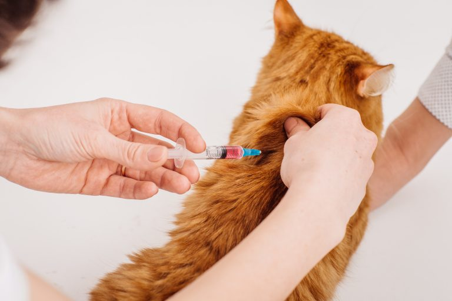

This company will be in service to all ranges of animals, from big to small. Our clients can feel comfortable with their beloved pets in our hands. All of our staff is well trained and happy to help. We feel that having a veterinary clinic that you can trust is having a happy pet’s health you can trust. We treat every pet patient as our own and guarantee safe service.The reason for starting this business is to help all pets in our area live happy, healthy lives. All of us at Beaver Creek Veterinary Clinic love animals and are trained and ready to take care of any problem that comes along. We believe that the focus of veterinary service and medicine is the bond between our clients and their pets.